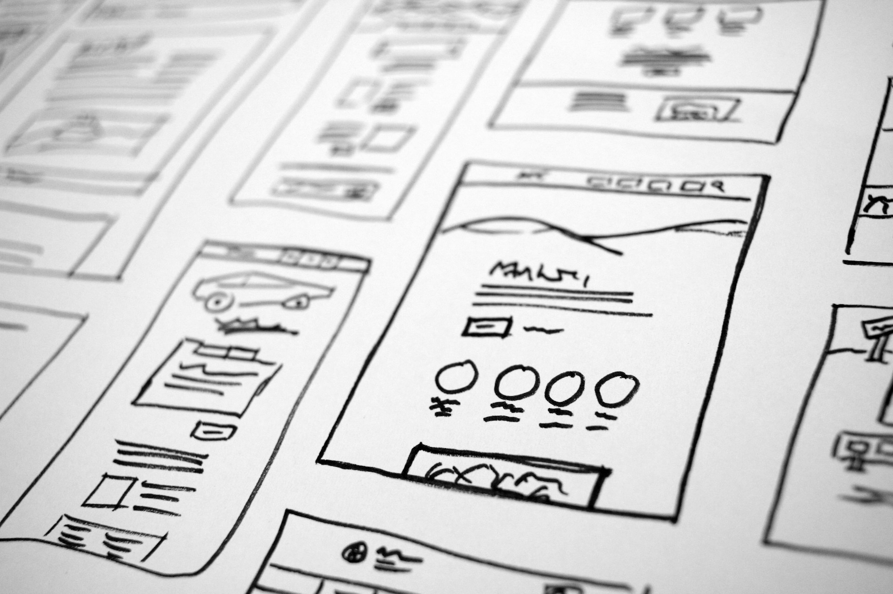

Software for One - Part II

When we stop treating software as a permanent asset to be depreciated over five years, the architectural bottleneck shifts from how we build to how we describe. In this paradigm, the User Interface becomes an ephemeral byproduct rather than a deliberate design choice. Traditionally, Product Managers obsessed over onboarding flows and intuitive navigation to lower the barrier for a mass audience, but with Personal Monoliths, these concepts are deprecated. Since the creator and the user are the same person, the interface can be aesthetically ugly, complicated or entirely text-based.
In the traditional life cycle, UI development is a game of compromise, creating a standardized language of buttons, modals and grids that could cover a million different edge cases for a million different users. But when the user is an audience of one and the software is designed to expire, the UI shifts from a permanent digital storefront to a Just-in-Time manifestation. The user-programmer no longer builds interfaces, he describes the necessary interactions and the AI builds a temporary visual bridge to the data.
Because the interface doesn't need to survive a multi-year roadmap, it can be hyper-specific to the user’s immediate needs. If a market trader needs to visualize a specific anomaly in the market for a ten-minute window, the UI doesn't need a "Settings" gear, a "Help" documentation link or a responsive layout for mobile. It generates a high-density dashboard that might be illegible to anyone else but is perfectly tuned to that trader’s current mental model. The friction of navigating menus is replaced by the fluidity of a generated surface that only contains the three buttons relevant to the task at hand.
The technical debt of the frontend, the maintenance of CSS frameworks, state management libraries and browser compatibility patches, disappears in this ephemeral paradigm. In a "Single-Use" context, the browser is merely a canvas for a disposable DOM.